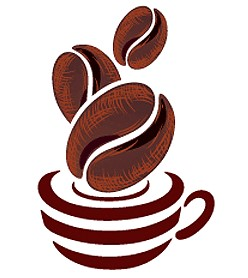

<ion-content padding>
	<div class="wrapper fadeInDown">
		<div id="formContent">
			<!-- Tabs Titles -->
			<h2 class="active"> Iniciar Sesión </h2>
			<h2 class="inactive"> Sucursal </h2>
			
			
			<!-- Icon -->
			<div class="fadeIn first">
				
			</div>
			
			<!-- Login Form -->
			<form #signInForm="ngForm" (submit)="signIn()">
				<ion-input [(ngModel)]="userModel.email" type="email" id="login" class="fadeIn second" name="email" placeholder="Correo" required></ion-input>
				<ion-input [(ngModel)]="userModel.password" type="password" id="password" class="fadeIn third" name="password" placeholder="Contraseña" required minlength="6"></ion-input>
				<input type="submit" class="fadeIn fourth" value="Iniciar">
			</form>
			
			<!-- Remind Passowrd -->
			<div id="formFooter">
				Copyright &copy; 2018 <br>
				CoffeeApp
			</div>
			
		</div>
	</div>

</ion-content>
  